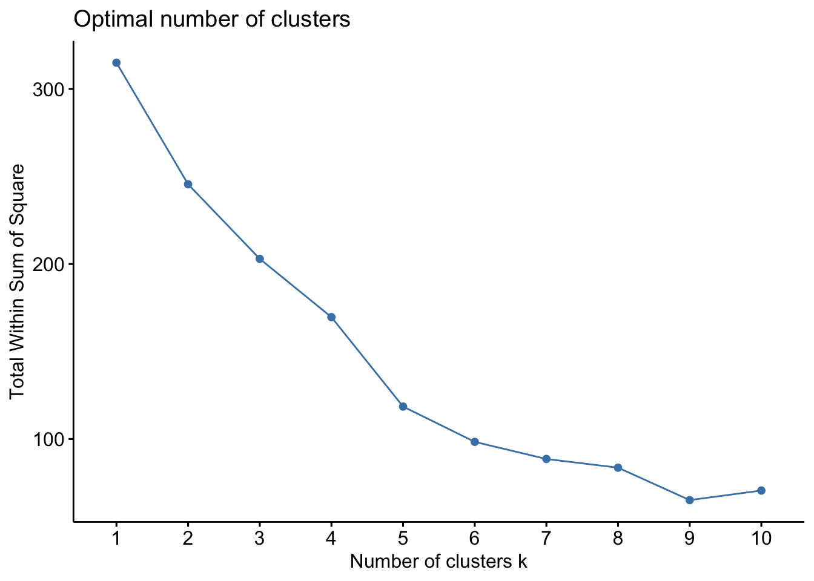
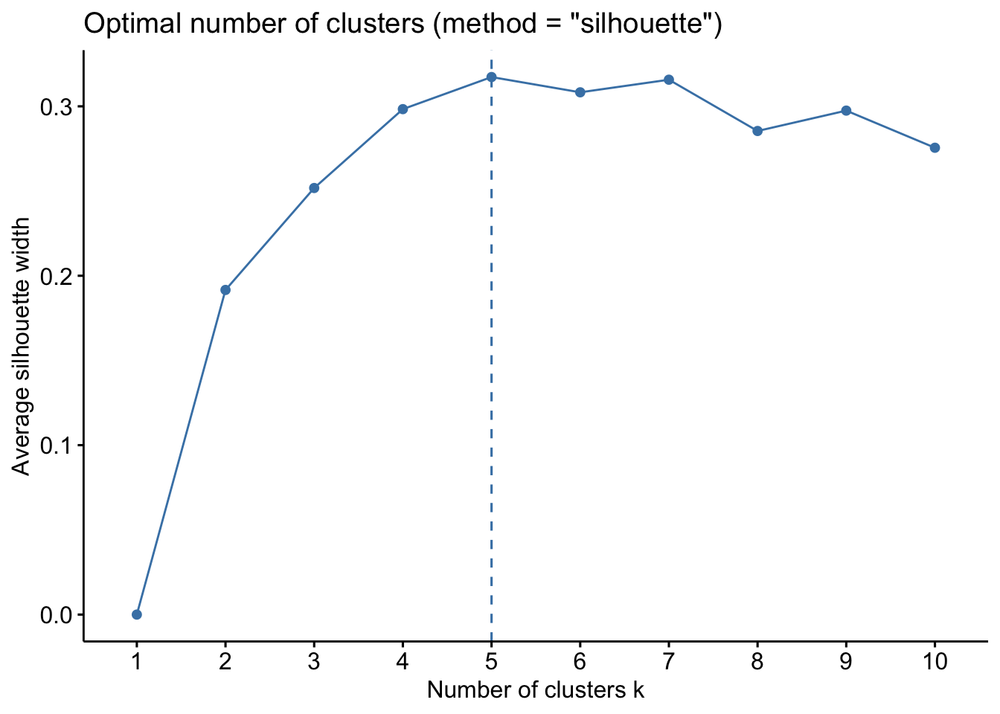
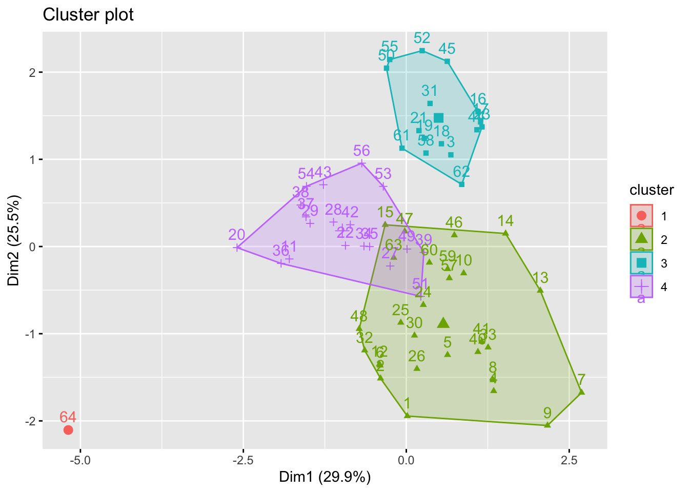
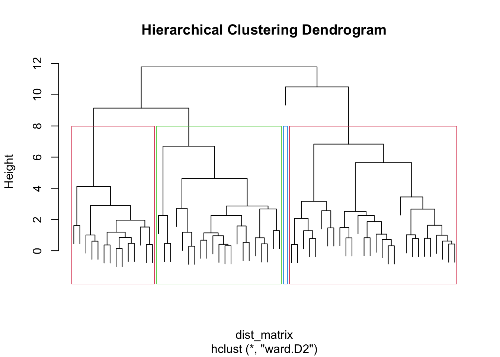

── Attaching core tidyverse packages ──────────────────────── tidyverse 2.0.0 ──
✔ dplyr 1.2.0 ✔ readr 2.2.0
✔ forcats 1.0.1 ✔ stringr 1.6.0
✔ ggplot2 4.0.1 ✔ tibble 3.3.1
✔ lubridate 1.9.4 ✔ tidyr 1.3.2
✔ purrr 1.2.1
── Conflicts ────────────────────────────────────────── tidyverse_conflicts() ──
✖ dplyr::filter() masks stats::filter()
✖ dplyr::lag() masks stats::lag()
ℹ Use the conflicted package (<http://conflicted.r-lib.org/>) to force all conflicts to become errors
Welcome to factoextra!
Want to learn more? See two factoextra-related books at https://www.datanovia.com/en/product/practical-guide-to-principal-component-methods-in-r/Collaborative Project K-means and Hclusts
Download Packages
You can add options to executable code like this
d <- read_excel("41562_2024_2070_MOESM4_ESM.xlsx")Look at the dataset
glimpse(d)Rows: 72
Columns: 26
$ `Sample Code` <chr> "SAL1005", "SAL1001", "SAL919", "SAL2049", "SAL2053", …
$ `Bone Part` <chr> "Long bone", "Long bone", "Rib", "Rib", "Skull", "Rib"…
$ Unit <dbl> 1, 1, 9, 2, 2, 2, 2, 2, 2, 7, 1, 1, 9, 9, 9, 9, 9, 9, …
$ Sector <chr> "203/104", "206/106", "96/202", "8/B-C", "2/A", "Z2/A2…
$ `Depth (cm)` <chr> "290-300", "130-140", "170-180", "270-290", "280-290",…
$ `Ceramic Phase` <chr> "2", "2", "2", "2", "2", "2", "2", "2", "2", "2", "3",…
$ Burial <chr> "1005", "1001", "919", "2049", "2053", "2059", "2063",…
$ `Collagen (mg)` <dbl> 80, 50, 32, 14, 38, 57, 6, 36, 29, 27, 81, 33, 33, 20,…
$ `Yield (%)` <chr> "6.2", "3.6", "6.4", "3.5", "4.6", "5.5", "1.5", "4.6"…
$ `C% mean` <chr> "43.0", "5.2", "39.9", "40.6", "34.8", "34.5", "39.5",…
$ `C% 1σ` <chr> "2.5", "0.9", "0.1", "0.4", "1.2", "1.4", "1.5", "0.4"…
$ δ13CA <chr> "-9.4710000000000001", "-12.294", "-10.564", "-9.63299…
$ δ13CB <chr> "-9.4380000000000006", "-11.819000000000001", "-10.569…
$ δ13CC <dbl> -9.493, -12.072, -10.527, -9.574, -11.533, -11.931, -8…
$ `δ13C mean` <chr> "-9.5", "-12.1", "-10.6", "-9.6", "-11.6", "-12.0", "-…
$ `δ13C 1σ` <chr> "0.0", "0.2", "0.0", "0.0", "0.0", "0.1", "0.1", "0.0"…
$ `N% mean` <chr> "16.0", "1.7", "14.6", "14.7", "12.8", "12.7", "14.0",…
$ `N% 1σ` <chr> "1.0", "0.3", "0.1", "0.2", "0.5", "0.6", "0.6", "0.1"…
$ δ15NA <chr> "9.0619999999999994", "7.968", "7.8010000000000002", "…
$ `δ5N B` <chr> "9", "7.9320000000000004", "7.835", "8.615999999999999…
$ `δ5N C` <dbl> 9.041, 7.920, 7.810, 8.554, 11.052, 7.963, 12.814, 11.…
$ `δ15N mean` <chr> "9.0", "7.9", "7.8", "8.6", "11.1", "8.0", "12.8", "11…
$ `δ15N 1σ` <chr> "0.0", "0.0", "0.0", "0.0", "0.0", "0.0", "0.0", "0.0"…
$ `C/N ratio` <chr> "3.1", "3.5", "3.2", "3.2", "3.2", "3.2", "3.3", "3.2"…
$ Replicas <chr> "3", "3", "3", "3", "3", "3", "3", "3", "3", "3", "3",…
$ Session <dbl> 2, 2, 1, 2, 2, 2, 2, 2, 2, 2, 1, 2, 2, 2, 2, 1, 1, 1, …skimr::skim(d)| Name | d |
| Number of rows | 72 |
| Number of columns | 26 |
| _______________________ | |
| Column type frequency: | |
| character | 21 |
| numeric | 5 |
| ________________________ | |
| Group variables | None |
Variable type: character
| skim_variable | n_missing | complete_rate | min | max | empty | n_unique | whitespace |
|---|---|---|---|---|---|---|---|
| Sample Code | 1 | 0.99 | 2 | 8 | 0 | 71 | 0 |
| Bone Part | 6 | 0.92 | 3 | 9 | 0 | 11 | 0 |
| Sector | 7 | 0.90 | 1 | 15 | 0 | 58 | 0 |
| Depth (cm) | 8 | 0.89 | 1 | 7 | 0 | 33 | 0 |
| Ceramic Phase | 9 | 0.88 | 1 | 3 | 0 | 7 | 0 |
| Burial | 7 | 0.90 | 2 | 5 | 0 | 64 | 0 |
| Yield (%) | 7 | 0.90 | 3 | 4 | 0 | 44 | 0 |
| C% mean | 7 | 0.90 | 1 | 4 | 0 | 55 | 0 |
| C% 1σ | 7 | 0.90 | 1 | 3 | 0 | 29 | 0 |
| δ13CA | 8 | 0.89 | 1 | 19 | 0 | 64 | 0 |
| δ13CB | 8 | 0.89 | 1 | 19 | 0 | 63 | 0 |
| δ13C mean | 2 | 0.97 | 1 | 18 | 0 | 47 | 0 |
| δ13C 1σ | 7 | 0.90 | 1 | 3 | 0 | 4 | 0 |
| N% mean | 7 | 0.90 | 1 | 4 | 0 | 48 | 0 |
| N% 1σ | 7 | 0.90 | 1 | 3 | 0 | 17 | 0 |
| δ15NA | 8 | 0.89 | 1 | 18 | 0 | 63 | 0 |
| δ5N B | 8 | 0.89 | 1 | 19 | 0 | 62 | 0 |
| δ15N mean | 2 | 0.97 | 1 | 4 | 0 | 39 | 0 |
| δ15N 1σ | 7 | 0.90 | 1 | 3 | 0 | 4 | 0 |
| C/N ratio | 7 | 0.90 | 1 | 3 | 0 | 8 | 0 |
| Replicas | 7 | 0.90 | 1 | 1 | 0 | 4 | 0 |
Variable type: numeric
| skim_variable | n_missing | complete_rate | mean | sd | p0 | p25 | p50 | p75 | p100 | hist |
|---|---|---|---|---|---|---|---|---|---|---|
| Unit | 7 | 0.90 | 4.74 | 3.57 | 1.00 | 2.00 | 2.00 | 9.00 | 12.00 | ▇▁▂▃▂ |
| Collagen (mg) | 7 | 0.90 | 35.57 | 22.20 | 6.00 | 21.00 | 30.00 | 45.00 | 129.00 | ▇▆▁▁▁ |
| δ13CC | 8 | 0.89 | -12.31 | 1.74 | -15.74 | -13.33 | -12.76 | -11.42 | -6.91 | ▂▇▅▂▁ |
| δ5N C | 8 | 0.89 | 8.53 | 3.43 | -15.39 | 7.92 | 8.65 | 9.77 | 12.81 | ▁▁▁▁▇ |
| Session | 7 | 0.90 | 1.45 | 0.50 | 1.00 | 1.00 | 1.00 | 2.00 | 2.00 | ▇▁▁▁▆ |
Select numeric variables only. Clustering methods like K-means etc. need numeric variables
cluster_d <- d |>
select(where(is.numeric)) |>
drop_na()Scale the data
d_scaled <- scale(cluster_d)Scaling puts all variables on the same scale.
This is important because variables with large values could otherwise dominate the clustering.
For example, a variable measured in thousands would have more influence than a variable measured from 0 to 1.
Choose the number of clusters
fviz_nbclust(d_scaled, kmeans, method = "wss")
fviz_nbclust(d_scaled, kmeans, method = "silhouette")
The WSS elbow plot looks for the point where adding more clusters stops improving the model much.
The silhouette plot shows how well-separated the clusters are.
Run K-means clustering
set.seed(123)
kmeans_result <- kmeans(d_scaled, centers = 4, nstart = 25)centers = 4 means I am asking R to find 4 clusters.
nstart = 25 tells R to try 25 different starting points and keep the best result
set.seed(123) makes the result reproducible.
View the K-means results
kmeans_resultK-means clustering with 4 clusters of sizes 1, 28, 16, 19
Cluster means:
Unit Collagen (mg) δ13CC δ5N C Session
1 -1.0419730 0.2519619 -1.77437556 -6.9775605 1.0899719
2 -0.1885475 -0.1879716 0.28105012 0.2336473 1.0899719
3 1.2677338 -0.2883564 0.06553793 0.2521144 -0.9031196
4 -0.7348652 0.5065761 -0.37598078 -0.1893891 -0.9031196
Clustering vector:
[1] 2 2 3 2 2 2 2 2 2 2 4 2 2 2 2 3 3 3 3 4 3 4 3 2 2 2 4 4 4 2 3 2 2 4 4 4 4 4
[39] 4 2 2 4 4 3 3 2 2 2 4 3 4 3 4 4 3 4 2 3 2 2 3 3 2 1
Within cluster sum of squares by cluster:
[1] 0.00000 74.85309 22.23083 49.57302
(between_SS / total_SS = 53.4 %)
Available components:
[1] "cluster" "centers" "totss" "withinss" "tot.withinss"
[6] "betweenss" "size" "iter" "ifault" kmeans_result$cluster #tells you which cluster each row belongs to [1] 2 2 3 2 2 2 2 2 2 2 4 2 2 2 2 3 3 3 3 4 3 4 3 2 2 2 4 4 4 2 3 2 2 4 4 4 4 4
[39] 4 2 2 4 4 3 3 2 2 2 4 3 4 3 4 4 3 4 2 3 2 2 3 3 2 1Visualizing K-means clusters
#shows how the observations are grouped into clusters
fviz_cluster(kmeans_result, data = d_scaled)
Add K-means clusters back to the data
data_kmeans <- cluster_d |>
mutate(kmeans_cluster = as.factor(kmeans_result$cluster))This creates a new dataset with the cluster number added as a new column, so we can compare the original variables across clusters.
Create a distance matrix for hierarchical clustering
dist_matrix <- dist(d_scaled)Hierarchical clustering needs to know how far apart each observation is from every other observation, this line calculates those distances.
Run hierarchical clustering
#ward.D2 is to create compact, balanced clusters
hclust_result <- hclust(dist_matrix, method = "ward.D2")Plot the dendrogram
plot(hclust_result, labels = FALSE, main = "Hierarchical Clustering Dendrogram")
rect.hclust(hclust_result, k = 4, border = 2:4) #draws boxes around 3 clusters
Cut the trees into clusters
hclust_clusters <- cutree(hclust_result, k = 4) #each row is assigned to one hierarchical clusterAdd hierarchical clusters back to the data
data_hclust <- cluster_d |>
mutate(hclust_cluster = as.factor(hclust_clusters))Compare K-means and hierarchical clustering
table(
Kmeans = data_kmeans$kmeans_cluster,
Hclust = data_hclust$hclust_cluster
) Hclust
Kmeans 1 2 3 4
1 0 0 0 1
2 28 0 0 0
3 0 14 2 0
4 0 0 19 0The table shows whether the two methods grouped observations similarly.
If many observations fall into the same combinations, the methods are somewhat agreeing.
Summarize cluster characteristics
#calculates the average value of each variable within each K-means cluster
data_kmeans |>
group_by(kmeans_cluster) |>
summarise(across(everything(), mean, na.rm = TRUE))Warning: There was 1 warning in `summarise()`.
ℹ In argument: `across(everything(), mean, na.rm = TRUE)`.
ℹ In group 1: `kmeans_cluster = 1`.
Caused by warning:
! The `...` argument of `across()` is deprecated as of dplyr 1.1.0.
Supply arguments directly to `.fns` through an anonymous function instead.
# Previously
across(a:b, mean, na.rm = TRUE)
# Now
across(a:b, \(x) mean(x, na.rm = TRUE))# A tibble: 4 × 6
kmeans_cluster Unit `Collagen (mg)` δ13CC `δ5N C` Session
<fct> <dbl> <dbl> <dbl> <dbl> <dbl>
1 1 1 41 -15.4 -15.4 2
2 2 4.07 31.2 -11.8 9.33 2
3 3 9.31 28.9 -12.2 9.39 1
4 4 2.11 46.7 -13.0 7.88 1#does the same thing for hierarchical clusters
data_hclust |>
group_by(hclust_cluster) %>%
summarise(across(everything(), mean, na.rm = TRUE))# A tibble: 4 × 6
hclust_cluster Unit `Collagen (mg)` δ13CC `δ5N C` Session
<fct> <dbl> <dbl> <dbl> <dbl> <dbl>
1 1 4.07 31.2 -11.8 9.33 2
2 2 9.79 29.7 -12.0 9.27 1
3 3 2.48 44.5 -13.0 8.10 1
4 4 1 41 -15.4 -15.4 2